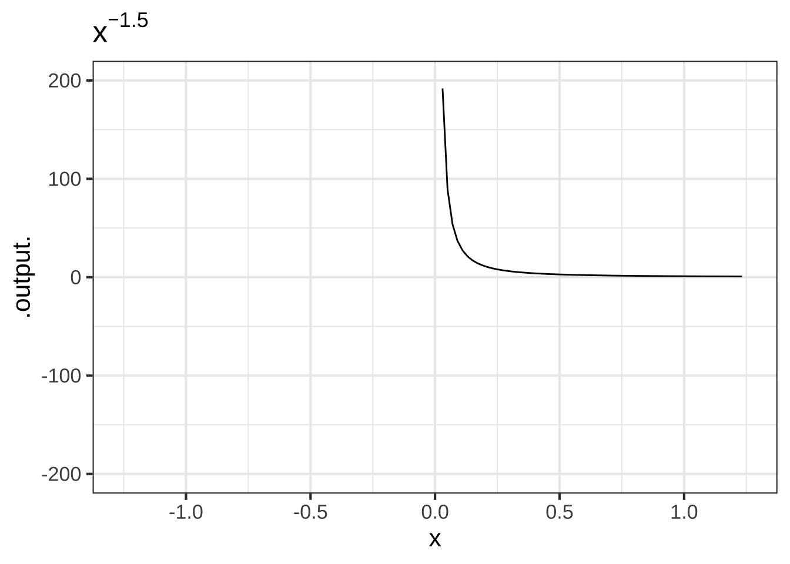
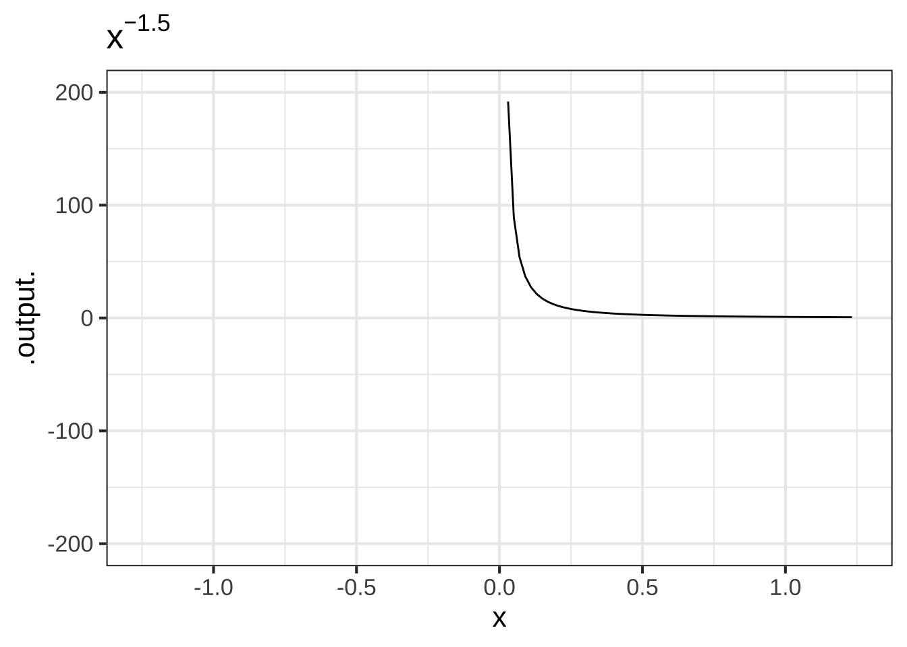

2 Modeling functions
When mathematics is used to understand or analyze or predict a real world situation, the pattern of work is often in three stages:  200
200
- Translate the real-world situation into a mathematical form. This translation is called mathematical modeling. For instance, Newton was trying to make sense of the motion of planets in light of his novel theory that gravity is a universal force of attraction between masses, rather than something special to Earth. He modeled force as a quantity that can be measured, simplified the planets to mere masses (another measurable quantity), and supposed that position and motion were related in a particular way: velocity being the rate of change with respect to time of position, and acceleration being the rate of change of velocity with respect to time. His theory of the motion of planets was based on two fundamental mathematical models: First
\[F = ma\ \ \ \text{(Newton's Second Law)}\] which relates force, mass, and acceleration. Second, the
\[F = \frac{G m_1 m_2}{d^2}\ \ \ \text{(Law of Universal Gravitation)}\] (sometimes called the inverse square law), which relates the mass of two objects (\(m_1\) and \(m_2\)), and the distance between them to the force of gravitation. (We’ll get to the purpose of the \(G\) in Chapter 15.)
In this book the objective of the modeling phase will almost always be choose or construct one or more functions that represent the relationships involved in the system being studied. You’ll learn several strategies for turning what you know about the system into appropriate functions. And you’ll learn some standard frameworks for organizing your ideas to help you determine how functions will be related, for instance Newton’s framework relating position, velocity, and acceleration as rates of change of one another. 210
- Do mathematical work on the model to shape it into a form that can directly answer the modeler’s question of interest. For instance, Newton knew from previous astronomical observations and Kepler’s theorizing that planets’ orbits are elliptical in shape. He needed to do some work on his two models in order to deduce the orbital shapes consistent with his Second Law and Universal Gravitation.
In this book you’ll learn to use several key tools for doing mathematical work on functions. We might as well name them now: differentiation, anti-differentiation, optimization, and zero-finding. Computers make each tool easy to use. Your job is to learn enough about them that you’ll know when to use each tool and why.
- Evaluate the model to figure out the extent to which to rely on the answer it gives and to see if the consequences of the model are consistent with what happens in the real world. The evaluation often leads to a re-assessment of the model and a return to stage 1 to improve things. The resulting loop is called the modeling cycle. For example, it seems likely that Newton did not start out knowing that gravitation follows an inverse square law. Perhaps he went through several modeling cycles until he found the form that was consistent with Kepler’s elliptical orbits.
In this book you’ll learn techniques for comparing models to data and for making predictions from models that can be compared to observations. You’ll also see examples of when the evaluation of a function suggests revisions that might improve the model.
2.1 Pattern-book functions
Experience allows us to make a short list of simple mathematical functions that provide a large majority of the tools for representing the real world as a mathematical object. Think of the items in this list as different actors, each of whom is skilled in portraying an archetypical character: hero, outlaw, lover, fool, comic. A play brings together different characters, costumes them, and relates them to one another through dialog or other means. All this is for the purpose of telling a story and providing insight into human relationships and emotions. .230
A mathematical model is a kind of a story and a mathematical modeler a kind of playwright. She combines mathematical character types to tell a story about relationships. But there is only a handful of archetypal mathematical functions, the analog of the character actors in drama and comedy. In creating a mathematical model, you clothe the actors to suit the era and location and assemble them together in harmony or discord.
Costume designers and others do not start from nothing. There are reference guides that collect patterns which a designer can customize to the needs at hand. These reference guides are sometimes called “pattern books.” (See Figure 2.1 for an example.)

Figure 2.1: A pattern book of theatrical costumes
Similarly, we will start with a pattern set of functions that have been collected from generations of experience as useful in describing diverse aspects of the real world and have simple calculus-related properties that make them relatively easy to deal with. To remind us of their role in modeling, we’ll call these pattern-book functions. There are just a handful, from which untold numbers of useful modeling functions can be constructed. (Mastering calculus is in part a matter of becoming familiar with the mathematical connections among the pattern-book functions. You’ll see these in due time.)
Here is a list of our pattern-book functions showing both a traditional notation and the R formula:
| Pattern name | Traditional notation | R notation |
|---|---|---|
| exponential | \(e^x\) | exp(x) |
| logarithm (“natural log”) | \(\ln(x)\) | log(x) |
| sinusoid | \(\sin(x)\) | sin(x) |
| square | \(x^2\) | x^2 |
| proportional | \(x\) | x |
| constant | \(1\) | 1 |
| reciprocal | \(1/x\) or \(x^{-1}\) | 1/x |
| gaussian (“hump”) | \(\dnorm(x)\) | dnorm(x) |
| sigmoid | \(\pnorm(x)\) | pnorm(x) |
I’ve written these here in a traditional formula notation so that you can see the connections to the math you’ve already studied. I’ve used \(x\) to stand for the single input to these functions just because that’s traditional. 240
The list of pattern-book functions is short. You should memorize the names and be able easily to associate each name with the traditional notation.
Over the next several chapters, we will introduce several features of functions. These features include:
- monotonicity up or down
- concavity up or down
- horizontal asymptotes
- vertical asymptotes
- periodicity
- continuity
By the end of Block 1, you should be able to list all nine basic pattern-book functions and say which of these features are relevant to each. 250
These pattern-book functions are widely applicable. But nobody would confuse the pictures in a pattern book with costumes that are ready for wear. Each pattern must be tailored to fit the actor and customized to fit the theme, setting, and action of the story. 260
Similarly, the mathematical functions used in real-world applications—as opposed to the pattern-book functions are adorned with parameters. Parameters do the work of fitting the pattern to the units and dimensions of the input and output quantities. If the pattern is for a sock, the parameter is the size needed to fit the foot. And just as there are different systems for sizing shirts, trousers, shoes, and so on, tradition has favored idioms for parameterizing the different kinds of pattern-book functions. We haven’t yet introduced these idioms, but when we do you are well advised to learn to interpret them at a glance.
There is universal agreement about the names of all of the pattern-book functions except for two: the hump and the logarithm.
The name “hump” is descriptive; the graph of a hump function looks like a camel’s hump or a bump in the road. There are all sorts of hump-shaped functions that differ slightly in their origins and detailed shape. In this book, we use “hump” to remind you of the basic shape, but the specific mathematical function we have in mind is called the gaussian function, named after a tremendously influential mathematician, Carl Friedrich Gauss (1777-1855). This function has an important role throughout physical science, technology, and data science. In probability theory and the social sciences, the shape of the function is given the simple name “normal distribution”; it shows up in so many places to be considered utterly unsurprising and “normal.”
The name “logarithm” is anything but descriptive. The name was coined by the inventor, John Napier (1550-1617), to emphasize the original purpose of his invention: to simplify the work of multiplication and exponentiation. The name comes from the Greek words logos, meaning “reasoning” or “reckoning,” and arithmos, meaning “number.” A catchy marketing term for the new invention, at least for those who speak Greek!
Although invented for the practical work of numerical calculation, the logarithm function has become central to mathematical theory as well as modern disciplines such as thermodynamics and information theory. The logarithm is key to the measurement of information and magnitude. As you know, there are units of information used particularly to describe the information storage capacity of computers: bits, bytes, megabytes, gigabytes, and so on. Very much in the way that there are different units for length (cm, meter, kilometer, inch, mile, …), there are different units for information and magnitude. For almost everything that is measured, we speak of the “units” of measurement. For logarithms, instead of “units” by tradition another word is used: the base of the logarithm. The most common units outside of theoretical mathematics are base-2 (“bits”) and base-10 (“decades”). But the unit that is most convenient in mathematical notation is “base e,” where \(e = 2.71828182845905...\). This is genuinely a good choice for the units of the logarithm, but that’s hardly obvious to anyone encountering it for the first time. To make the choice more palatable, it’s marketed as the “base of the natural logarithm.” In this book, we’ll be using this natural logarithm as our official pattern-book logarithm.
2.2 Constructing functions
Often, modeling involves building a complicated function out of the simple shapes provided by the pattern-book functions. This is not yet the time to say much more, but we do want to show you what such a construction looks like in both a traditional style of notation and the style used for programming computers. As you’ll see later, to make complicated functions we generally combine simpler functions in one or more of three different ways: linear combinations, products, and composition. 270
For instance, a linear combination of simple functions called “monomials” can look like this in traditional notation: \[g(x) \equiv 2 + 3 x - 7x^2\] and like this in the R/mosaic computer notation we will be using:
g <- makeFun(2 + 3*x - 7*x^2 ~ x)Functions constructed as a product of simple functions can look like this in tradition notation: \[h(t) \equiv \sin(t) e^{-t}\] and like this in computer notation:
2.3 Function shapes
You are going to be building models by selecting an appropriate function or by putting functions together in various ways. This might remind you of Lego blocks. As you know, Legos come in different shapes: \(6\times 2\), \(4\times 2\), \(2\times 2\), and so on. Similarly, each of the pattern-book functions has a distinctively shaped graph, just as different articles of clothing each have their own shape. Knowing the shapes by name will help you when you need to build a model. 280


The identity function and the constant function have extremely simple shapes. Note that the graph of constant function is not just any line, but a line with zero slope.


It’s tempting to deny that the constant function is a function. After all, the output does not depend on the input. Still, this situation arises frequently in modeling: you start out supposing that one quantity depends on another but it sometimes turns out that it does not. Since functions are our way of representing relationships, it’s helpful to have a function for the situation of “no relationship.” The constant function does this job.
2.4 The power-law family
Three of the pattern-book functions—\(1/x\), \(x\), \(x^2\)—belong to a infinite family called the power-law functions. Some other examples of power-law functions are \(x^3, x^4, \ldots\) as well as \(x^{1/2}\) (also written \(\sqrt{x}\)), \(x^{1.36}\), and so on. All of these can be written \(x^p\), where \(p\) is a number. 290
Even within the power-law family, it’s helpful to consider different but overlapping groups:
- The monomials: \(m_0(x) \equiv x^0\), \(m_1(x) \equiv x^1\), \(m_2(x) \equiv x^2\), \(\ldots\). Of course, \(m_0()\) is exactly the same as the constant function, and \(m_1(x)\) is the same as the identity function. As for the rest, they have just two general shapes: both arms up (for even powers); one arm up and the other down (for odd powers.)


Figure 2.2: Graphs of the monomial functions from order 2 to 5.
- The negative powers, e.g. \(f(x) \equiv x^{-1}\), \(g(x) \equiv x^{-2}\), \(h(x) \equiv x^{-1.5}\)

 
Figure 2.3: Graphs of power-law functions with negative exponents. Note that the function output is very large when \(x\) is near zero.
- The non-integer powers, e.g. \(f(x) = \sqrt{x}\), \(g(x) = x^\pi\), and so on.


Figure 2.4: The domain of power-law functions with non-integer power is \(0 \leq x < \infty\).
Exercise 2.1: H2eu2
Answer these questions about the pattern-book functions. You can refer to the graphs in Figures 2.2 through 2.4.
Question A Which of these best describes the concavity of the hump function?
- It’s not concave. ︎✘ If it curves, it’s either concave up or down.
- It’s concave down. ︎✘ In some places, but not in others.
- It’s concave down in the center and concave up on both flanks. ✔︎
- It’s concave down on the left and concave up on the right ︎✘ Look again
Question B Which of these best describes the concavity of the sigmoid function?
It’s not concave. ︎✘ If it curves, it’s either concave up or down.
It’s concave down. ︎✘ In some places, but not in others.
It’s concave down on the left and concave up on the right. ︎✘ Look again
It’s concave up on the left and concave down on the right. ✔︎ Look again Question C Which of these best describes the concavity of the second-order monomial \(m_2(x) \equiv x^2\)?
It’s not concave. ︎✘ If it curves, it’s either concave up or down.
It’s concave down. ︎✘ Is it a smile or a frown?
It’s concave down on the left and concave up on the right. ︎✘ Look again
-
It’s concave up everywhere in its domain. ✔︎ Look again
Exercise 2.2: H2KG3
Copy and paste the R/mosaic command below into a SANDBOX. The command shows a simple way to graph a function, in this case exp(). Press “Run code” to execute the command and draw the graph.

In this exercise, you’ll be modifying the sandbox code to draw different functions, so you can examine their shapes.
Your task is to read and interpret the graphs of the basic modeling functions. Here, you will be looking for zero-crossings: the neighborhood of a point in the function’s domain where the output of the function is negative for inputs on one side and positive for inputs on the other side. If zero is touched but not crossed, we’ll call that “touched zero.”
Make a list of the pattern-book functions. For each function in the list, say whether the function crosses zero, touches zero but doesn’t cross, or doesn’t touch at all in the part of the domain shown in the graphic: \(-3 \leq x \leq 3\). Also note if the value of the function appears to be reaching a horizontal asymptote at zero for very negative \(x\), for very positive \(x\), for both, or neither.
We’ll show you the answers for the exponential function. You’ll have to modify the computer command to graph the other pattern-book functions.
| function name | R formula | zero in domain shown in graph | asymptotic zero |
|---|---|---|---|
| exponential | exp(x) |
no zeros | for very negative \(x\) |
| logarithm | |||
| sinusoid | |||
| square | |||
| proportional | |||
| constant | |||
| reciprocal | |||
| hump | |||
| sigmoid |
Exercise 2.3: PYKG5
In this activity, you will be examining the various pattern-book functions to look for two different features:
- whether the graph has a slope that is consistently positive or negative, and
- whether the function being graphed is concave up, concave down, neither, or concave up in some regions of the domain and down for others.
Copy and paste the R/mosaic command below in a SANDBOX to draw a function graph. Remember to press “Run code.”
 To modify the command to draw another function, replace the
To modify the command to draw another function, replace the exp(x) with another formula, for instance 1/x.
Make a list of the pattern-book functions. For each function in the list, say whether the function crosses zero, touches zero but doesn’t cross, or doesn’t touch at all in the part of the domain shown in the graphic: \(-3 \leq x \leq 3\). Also note if the value of the function appears to be reaching a horizontal asymptote at zero for very negative \(x\), for very positive \(x\), for both, or neither.
We’ll show you the answers for the exponential function. You’ll have to modify the computer command to graph the other pattern-book functions.
| function name | R formula | slope | concavity |
|---|---|---|---|
| exponential | exp(x) |
up | concave up |
| logarithm | |||
| sinusoid | sin(x) |
both | both |
| square | |||
| proportional | |||
| constant | |||
| reciprocal | |||
| hump | |||
| sigmoid |
Exercise 2.4: Pdt9jy
On a piece of paper, sketch from memory a graph of each of the nine pattern-book functions.`
Exercise 2.5: VIW7T
For each of the pattern-book functions, the graph crosses either the vertical axis (that is \(x=0\)) or the horizontal axis (that is, \(f(x) = 0\)), or both. It’s helpful to know the exact quantitative value for the input where the function graph crosses the horizontal axis, and the exact quantitative value for the output where the function graph crosses the vertical axis.
These questions ask you, for each of the pattern-book functions, to find a specific input/output pair where you know the exact values. (Feel free to open a SANDBOX to try the various possibilities.)
Question A What is the exact output of the pattern-book exponential function when the input is \(x=0\)?
0 ︎✘ 0.3989423 ︎✘ 1/2 ︎✘ 1 ✔︎
Question B What is the exact output of the pattern-book sine function when the input is \(x=0\)?
0 ✔︎ 0.3989423 ︎✘ 1/2 ︎✘ 1 ︎✘ Question C What is the exact input to the pattern-book logarithm function where the output is 0?
0 ︎✘ 0.3989423 ︎✘ 1/2 ︎✘ 1 ✔︎
Question D What is the exact output of the pattern-book sigmoid function when the input is \(x=0\)?
0 ︎✘ 0.3989423 ︎✘ 1/2 ✔︎ 1 ︎✘
Question E What is the output (to several digits) of the pattern-book hump function when the input is \(x=0\)?
0 ︎✘ 0.3989423 ✔︎ Right. But 0.4 will do when you’re sketching a graph. 1/2 ︎✘ 1 ︎✘
Question F What is the exact input to the pattern-book **reciprocal* function where the output is 1? (That’s not an axis crossing.)
0 ︎✘ 0.3989423 ︎✘ 1/2 ︎✘ 1 ✔︎
Question G What is the exact input to the pattern-book **proportional* function where the output is 1/2? (That’s not an axis crossing.)
0 ︎✘ 0.3989423 ︎✘ 1/2 ✔︎ 1 ︎✘
Question H What is the exact output of the pattern-book constant function?
0 ︎✘ 0.3989423 ︎✘ 1/2 ︎✘ 1 ✔︎
Question I The pattern-book square function just touches the horizontal axis. What’s the input where this happens?
0 ✔︎ 0.3989423 ︎✘ 1/2 ︎✘ 1 ︎✘2.5 Instructor notes
It would be a huge coincidence if one of the pattern-book functions was a match for a particular relationship, such as one shown in data. We’ll need to tailor the pattern-book functions and combine them in various ways to capture a real-world relationship. 295
A helpful demonstration for students can be to display some real-world data, ask which pattern-book function seems the best of the lot, and then ask students how they would shift or shrink that function to correspond better to the data.
To start, here are the data relating pressure and volume of a gas at constant temperature s collected by Robert Boyle (1627-1691) that led him to formulate “Boyle’s Law.” The correct pattern-book function for these data is \(\recip(x) \equiv 1/x\). This is plotted but it doesn’t match the data. (Try scaling the function from \(1/x\) to \(1000/x\). Then home in on the correct value.)
gf_point(pressure ~ volume, data = Boyle) %>%
slice_plot(1/volume ~ volume)To illustrate, here’s a graph of month-to-month utility data from a house in Minnesota plotted along with the pattern-book function \(x\).
gf_point(kwh ~ elecbill, data = Utilities) %>%
slice_plot(x ~ x, domain(x=c(0,140)))Ask students why a straight-line pattern is appropriate for modeling these data and why \(x\) isn’t, on its own, a good model.
Here is monthly use of natural gas (mainly for heating) versus average outdoor temperature for the month. We’ll plot it next to an exponential function.

 Flipping the exponential left for right and scaling it would help:
Flipping the exponential left for right and scaling it would help:
gf_point(ccf ~ temp, data = Home_utilities) %>%
slice_plot(300*exp(-temp/20) ~ temp, domain(temp=c(0,80))) Do the data suggest a function that has a horizontal asymptote for large temperature? If so, where is it and why? The “why” should include both a descriptions of the mathematical signs that there is or is not a horizontal asymptote, but also a description of what this corresponds to in terms of real-world relationships, e.g. how much heating is needed when the outdoor temperature is high.
Do the data suggest a function that has a horizontal asymptote for large temperature? If so, where is it and why? The “why” should include both a descriptions of the mathematical signs that there is or is not a horizontal asymptote, but also a description of what this corresponds to in terms of real-world relationships, e.g. how much heating is needed when the outdoor temperature is high.